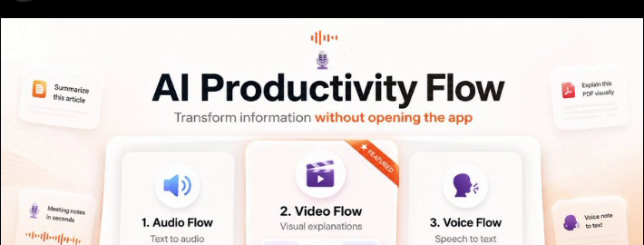

AI Productivity Flow — Transform Information Without Leaving Your Workflow
We use AI every day to summarize, explain, rewrite, research, and understand information.
But there is still one big problem with how most AI tools work.
You are reading something in one app, then you copy it, open another website, paste it into an AI chat, explain what you want, wait for the result, and then go back to what you were originally doing.
Productivity Flow was built to remove that interruption. It is an open-source desktop application designed around a simple idea: AI should fit into your existing workflow instead of forcing you to move your workflow into an AI app.
Productivity Flow combines three major systems: Video Flow, Audio Flow, and Voice Flow.
Together, they let you transform information into the format that is most useful to you — visual, audio, or text — while staying inside the applications you already use.